Sciare partendo dal paese
La cabinovia Markbachjochbahn ti porta da Niederau fino al Markbachjoch. Piste ampie e soleggiate, ideali per principianti e famiglie, con discese fino al paese.
Questa pagina è una traduzione automatica del testo originale (olandese, inglese o tedesco) e non è stata rivista da un madrelingua. In caso di dubbio fa fede la versione originale.
Wildschönau · Tirolo · Austria
Il soleggiato villaggio di montagna all’ingresso della valle della Wildschönau. Un posto dove sciare, camminare e tornare, anno dopo anno.
❄ Stagione invernale: piste a due passi dal paese, slittino e limpidi pomeriggi d’inverno.
☀ Stagione estiva: alpeggi, escursioni in montagna e lunghe serate in terrazza.
Il paese
Niederau si trova nella valle della Wildschönau, in Tirolo (Austria). È il primo paese che incontri salendo la strada di montagna da Wörgl, nella valle dell’Inn. Sorge a circa 828 metri in un’ampia e verde valle alta, circondata da prati alpini, boschi e dalle cime delle Alpi di Kitzbühel.
Insieme a Oberau, Auffach e Thierbach, Niederau forma il comune di Wildschönau, nel distretto di Kufstein. Il paese è da tempo uno dei preferiti dagli ospiti olandesi e britannici: raccolto e accogliente, con scuole di sci, pensioni e hotel raggiungibili a piedi dall’impianto di risalita.
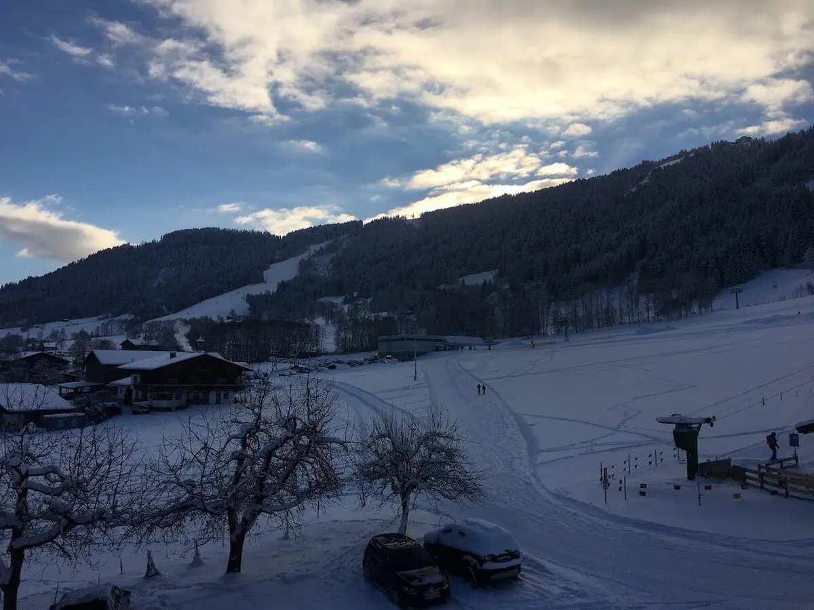
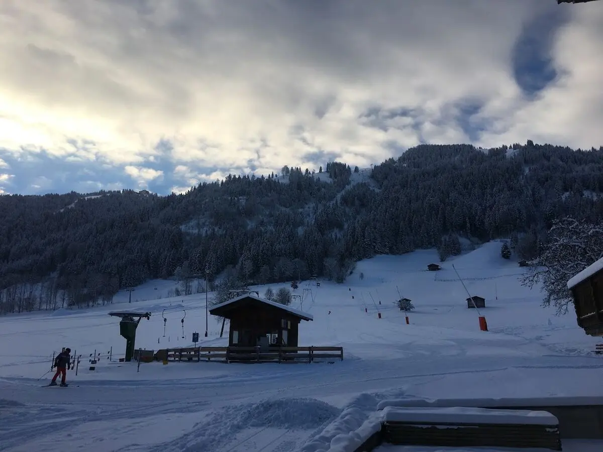
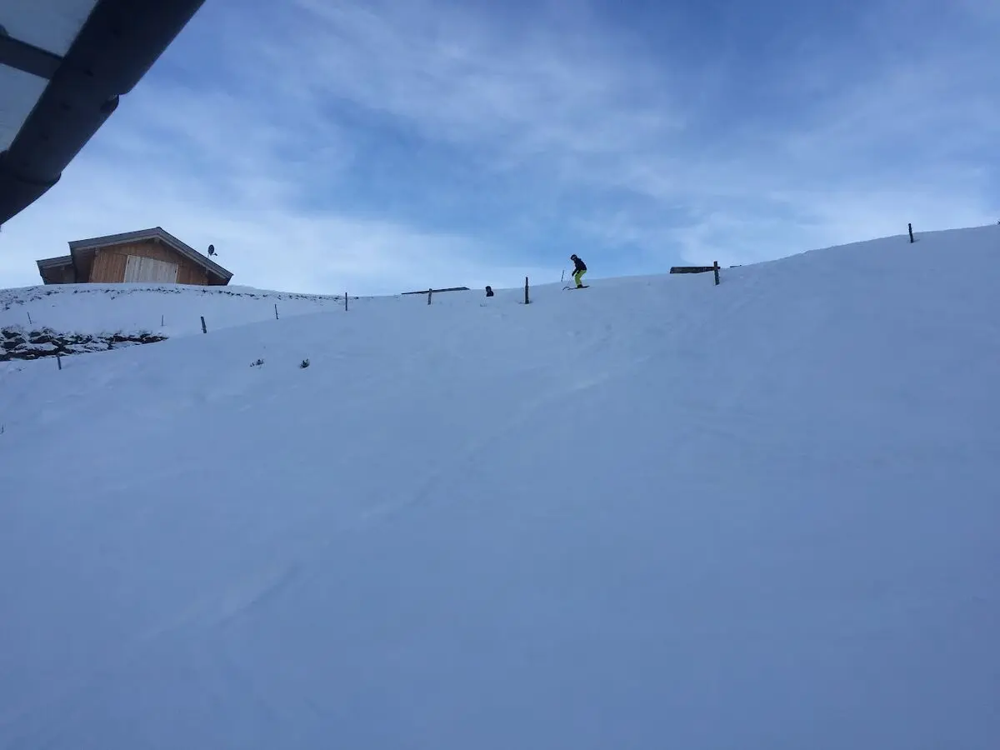
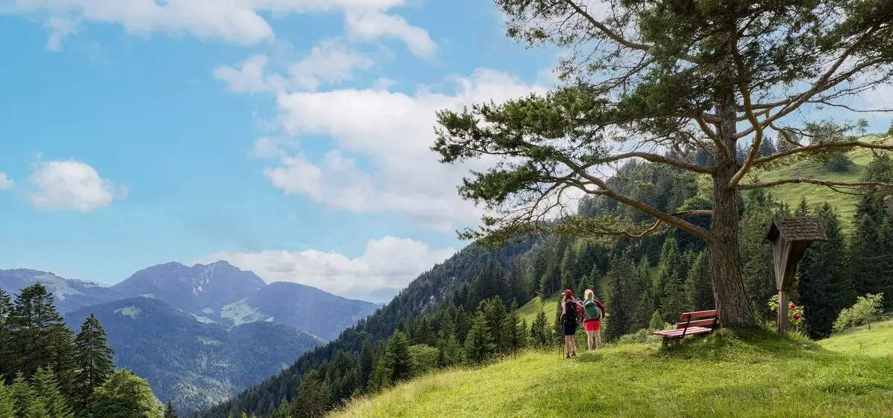
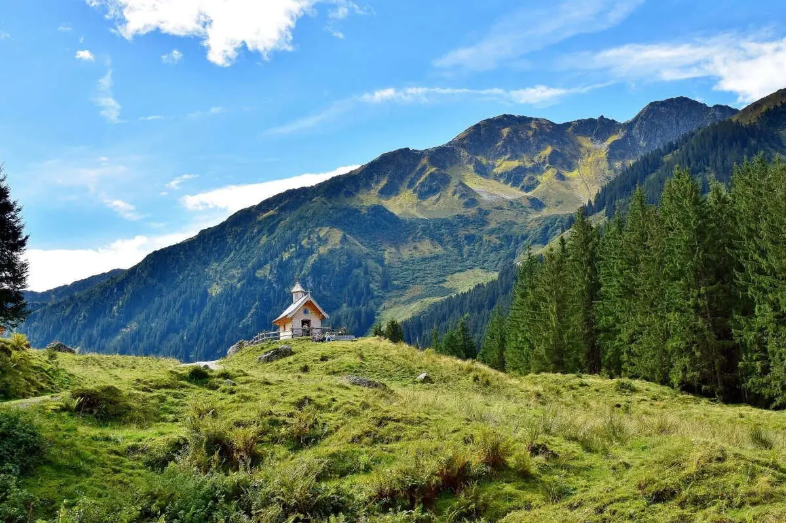
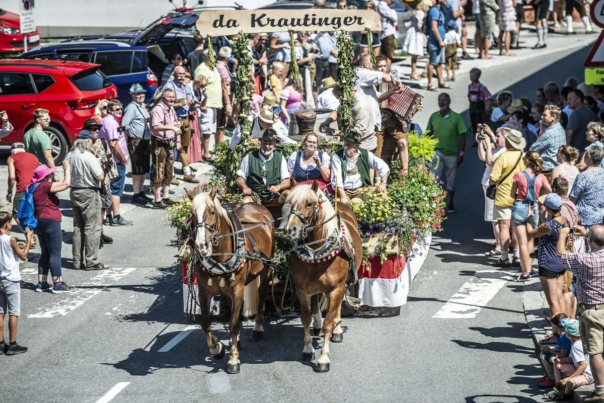
Tutto l’anno
Inverno ed estate sono l’alta stagione di Niederau, ma anche primavera e autunno hanno un fascino tutto loro. Qui sotto trovi cosa offre ogni stagione, un calendario per tutto l’anno e le migliori fonti per il meteo aggiornato.
La cabinovia Markbachjochbahn ti porta da Niederau fino al Markbachjoch. Piste ampie e soleggiate, ideali per principianti e famiglie, con discese fino al paese.
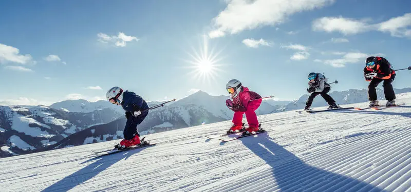
Con lo skipass Ski Juwel Alpbachtal Wildschönau puoi sciare anche sullo Schatzberg ad Auffach e proseguire attraverso il collegamento fino alla valle di Alpbach. Lo skibus collega i vari paesi.
In totale 145 km di piste, 47 impianti, 24 rifugi sulle piste e tre snow park.
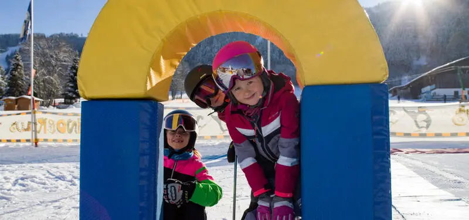
Niederau ha da tempo ottime scuole di sci con lezioni in olandese, inglese e tedesco e campi scuola vicino al paese. Un posto ideale per imparare a sciare.
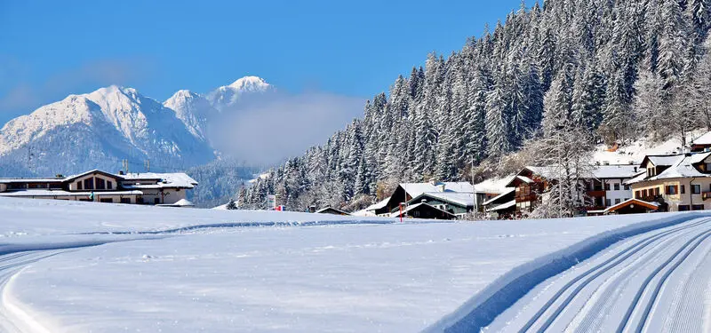
Piste di sci di fondo lungo la valle e sentieri invernali battuti che passano accanto a masi e piccole cappelle. Molto amate anche le ciaspolate e lo slittino: la valle ha tre piste da slittino, e quella del Lahnerköpfl si trova a Niederau stessa.
Il percorso del Penningberg (12 km) parte da Niederau; in tutta la valle ci sono circa 30–40 km di piste di fondo.
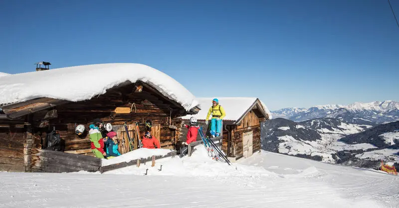
Accogliente ma senza eccessi: dopo una giornata sulle piste ci si accomoda in un rifugio o in una locanda del paese per un vin brûlé, un Kaiserschmarrn o un Gröstl tirolese.
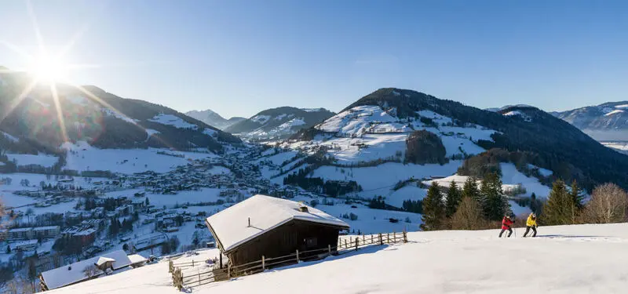
Niederau è aperto sulla valle e gode di molto sole – una meraviglia su una terrazza a marzo, quando le giornate si allungano e la neve è ancora buona.
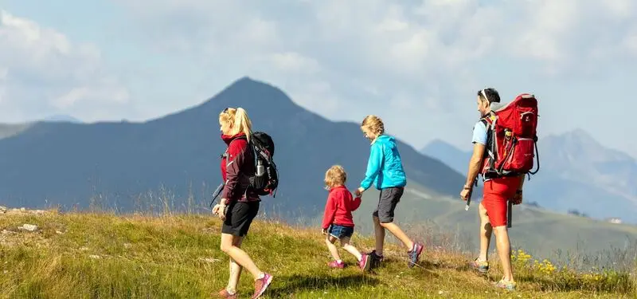
Centinaia di chilometri di sentieri segnalati: dalle tranquille passeggiate in valle alle escursioni sui crinali attorno alla valle. La cabinovia ti porta in quota in pochi minuti.
La valle conta oltre 300 km di sentieri segnalati.
Una delle più belle gole da percorrere a piedi del Tirolo: dalla Wildschönau lungo la selvaggia Wildschönauer Ache fino a Kundl, nella valle dell’Inn.
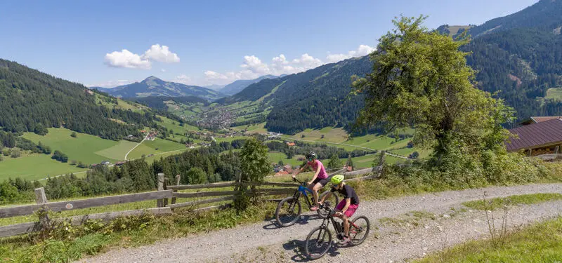
Strade forestali e sentieri di montagna fino agli alpeggi; con una e-bike anche i rifugi più in alto sono facilmente raggiungibili.
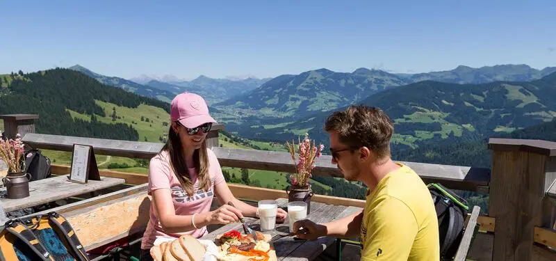
In estate molte malghe sono aperte: formaggio, latticello, speck e Kaspressknödel con vista sugli Alti Tauri e sul Kaiser.
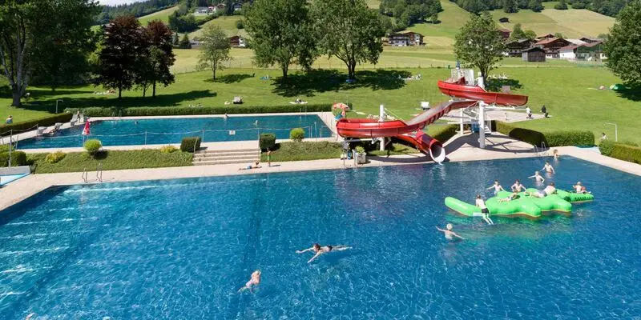
Parchi giochi, ruscelli da sbarrare, animali da fattoria e brevi passeggiate con una malga come premio. La Wildschönau è fatta per le famiglie. Ai margini di Niederau c’è una piscina all’aperto con tre vasche e un grande scivolo d’acqua.
Tra Niederau e Oberau si trova un complesso di piscine all’aperto riscaldate: ben oltre 1.000 m² di acqua suddivisi in tre vasche.
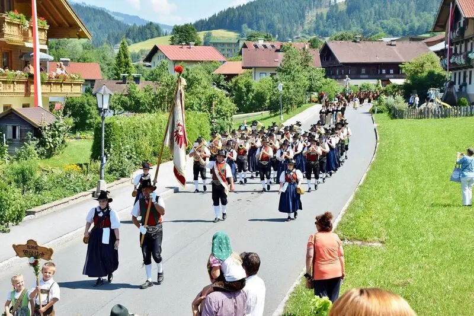
Bande musicali sulla piazza del paese, feste religiose e l’Almabtrieb in autunno, quando il bestiame addobbato scende dai pascoli.
Il momento clou è il Talfest di agosto, che si tiene a rotazione a Niederau, Oberau e Auffach, con un grande corteo.
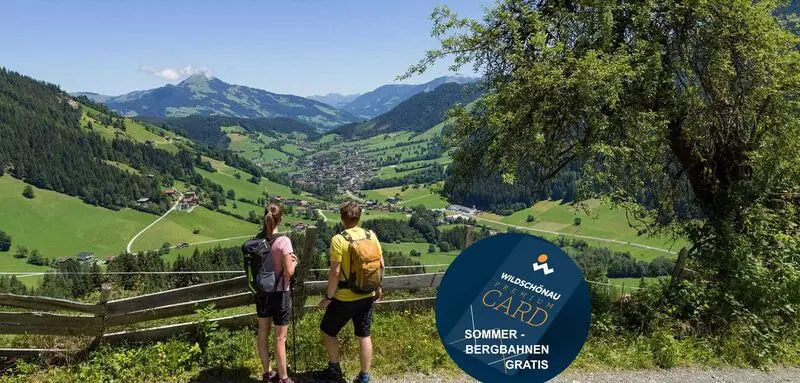
Gli ospiti ricevono una carta ospite tramite la propria struttura. Con la Wildschönau Premium Card, disponibile solo presso le strutture partner, in estate puoi usare gli impianti di risalita senza limiti. Chiedi alla tua struttura quale carta ricevi.
La carta si ottiene presso le strutture aderenti. Dà diritto anche al bus per escursionisti, alle piscine all’aperto e al Bergbauernmuseum z’Bach a Oberau, e permette ai bambini (5–14 anni) di partecipare al Drachenclub.
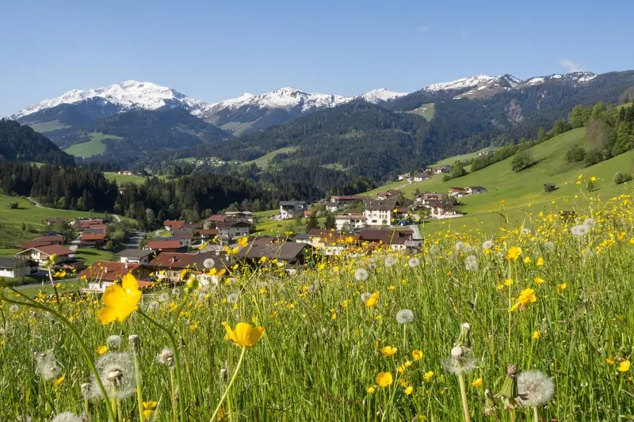
A marzo il sole è già alto: si può ancora sciare sulle piste soleggiate mentre la neve si ritira dal fondovalle e i prati si tingono di giallo con ranuncoli e denti di leone. Aprile e maggio sono tranquilli. A quote più basse i sentieri sono asciutti e adatti alle passeggiate; i percorsi più alti possono restare innevati fino a maggio inoltrato.
Molti impianti e rifugi fanno una breve pausa tra una stagione e l’altra, quindi controlla cosa è aperto prima di partire. Il tempo cambia in fretta: porta sempre uno strato in più.
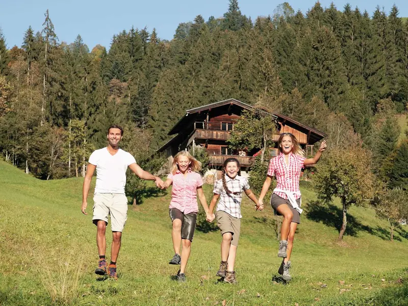
In montagna l’autunno è spesso stabile e limpido, con ampia visibilità e pochi escursionisti sui sentieri. Il terzo sabato di settembre ad Auffach si tiene l’Almabtrieb: circa cinquecento mucche scendono dagli alpeggi addobbate a festa, tra musica e un mercato di prodotti e artigianato locali (20 settembre nel 2025, 19 settembre nel 2026).
A cavallo tra settembre e ottobre la Krautinger Week è dedicata alla rapa da stoppia e alla grappa che se ne distilla, con passeggiate da maso a maso. Le date esatte cambiano di anno in anno. In queste settimane si può sentire anche il bramito dei cervi: la stagione degli amori va da fine agosto a inizio ottobre.
Un bollettino meteo in tempo reale va cercato su una fonte aggiornata ogni minuto, non su una pagina statica. Usa le fonti attuali qui sotto e controlla poco prima di partire: in montagna il tempo può cambiare nel giro di un’ora.
Attività
Che tu venga per sciare, camminare o semplicemente rilassarti, a Niederau e dintorni c’è molto da fare tutto l’anno. Qui sotto trovi cosa offre la valle stessa e quali gite in giornata, entro un’ora di auto, valgono la pena.
Brutto tempo? Prova il Bergbauernmuseum a Oberau, lo Swarovski Kristallwelten, i musei e l’Alpenzoo a Innsbruck, oppure un pomeriggio di benessere.
I tempi di percorrenza sono indicativi, in auto da Niederau. Orari di apertura e orari dei mezzi cambiano con le stagioni; controlla il sito del gestore prima di partire.
Natura e avventura
La valle si estende tra boschi, alpeggi e cime di montagna. Se stai in silenzio e osservi con attenzione, vedrai molto. Alcune idee per i giorni in cui non hai voglia di sciare o di fare una grande escursione.
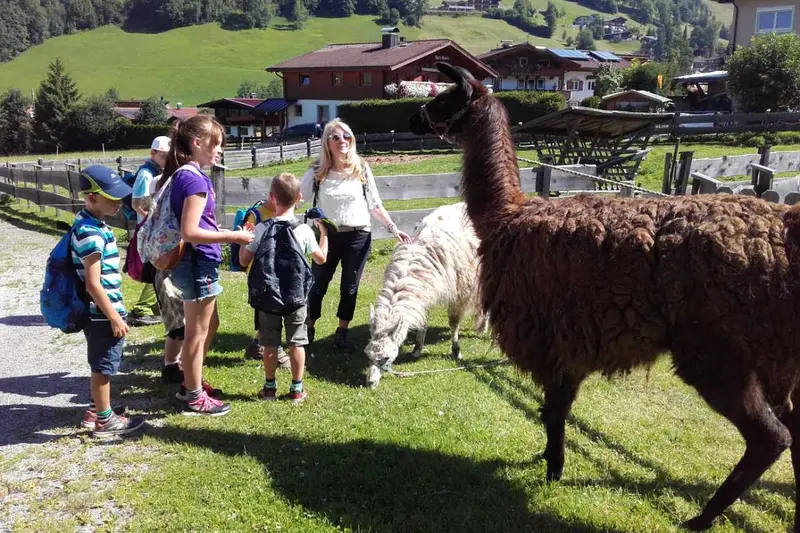
I boschi e i pascoli montani intorno alla valle ospitano, tra gli altri, caprioli, cervi, camosci e marmotte; a volte un’aquila reale volteggia in alto. Le marmotte amano i versanti soleggiati esposti a sud tra circa 900 e 2.500 metri, mentre i camosci restano per lo più sopra il limite del bosco.
Le migliori probabilità si hanno al mattino presto o al crepuscolo. Porta il binocolo, resta sui sentieri e mantieni la distanza. Non dare mai da mangiare agli animali selvatici e, in inverno, lasciali in pace restando sui percorsi segnalati.
Preferisci un incontro garantito? Il Wildpark Aurach vicino a Kitzbühel (± 45 minuti) ospita, tra gli altri, cervi, daini, mufloni, stambecchi e linci. Anche alcuni masi della valle permettono di vedere da vicino animali come lama, capre e mucche.
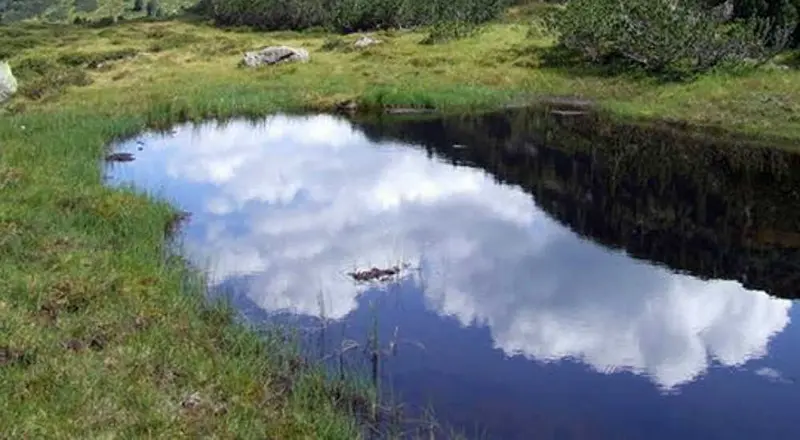
In valle si nuota nella piscina all’aperto riscaldata tra Niederau e Oberau. Vuoi un vero lago? Diversi si trovano a 14–16 km, raggiungibili in auto in 30–45 minuti: il Reintalersee vicino a Kramsach, uno dei laghi balneabili più caldi del Tirolo (fino a circa 25 °C) con prati per prendere il sole e un sentiero tutto intorno all’acqua; il Thiersee; e l’Hintersteiner See ai piedi del Wilder Kaiser, con una bella passeggiata ad anello. Più lontano si trova l’Achensee (± 50 minuti), il lago più grande del Tirolo.
L’acqua di montagna resta fresca anche in piena estate. Tieni d’occhio i bambini e controlla in anticipo parcheggi e prezzi d’ingresso.
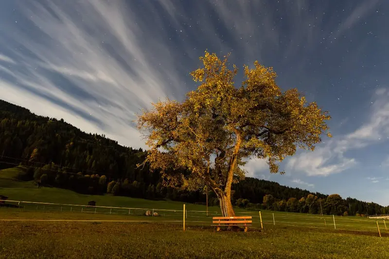
Sopra una buia valle di montagna si vedono molte più stelle che a casa. Scegli una notte limpida intorno alla luna nuova, allontanati dai lampioni – per esempio verso un prato di montagna sopra il paese – e lascia agli occhi mezz’ora per abituarsi. Poi usa solo una luce rossa, perché lo schermo del telefono rovina la visione notturna. Sotto un cielo davvero buio si vede a occhio nudo perfino la Via Lattea.
Intorno al 12 agosto le Perseidi raggiungono il picco: con pazienza conterai molte stelle cadenti. Le notti invernali sono lunghe e limpide, ma anche gelide. Un giro in slitta trainata da cavalli al lume di torce sotto le stelle è un’alternativa suggestiva.
Porta una lampada frontale e abiti caldi, non percorrere da solo sentieri ripidi al buio e avvisa qualcuno di dove stai andando.
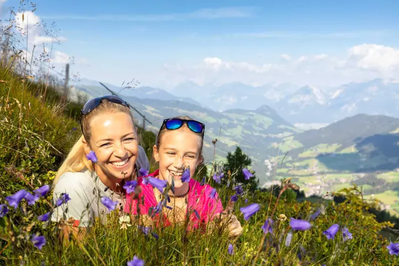
Da maggio e per tutta l’estate i prati si colorano: prima ranuncoli e denti di leone in valle, poi rododendri, genziane e altri fiori più in alto. Molte piante alpine sono protette, come la stella alpina e alcune genziane. Guarda e fotografa, ma non raccogliere nulla e resta sui sentieri, perché l’erba calpestata si riprende lentamente. Mangia solo bacche o erbe che riconosci con assoluta certezza.
La Kundler Klamm è una gola stretta con alte pareti di roccia scoscese, in cui la Wildschönauer Ache scorre fragorosa. Il largo sentiero è lungo circa 3,5 km (± 1 ora per ogni direzione), senza gradini e quindi adatto anche ai bambini; all’ingresso c’è un parco giochi.
Nella gola c’è una palestra di roccia per principianti ed esperti. Se vuoi provare la discesa in corda doppia, il down-climbing o il canyoning, fallo con una guida certificata che fornisce casco e corde; il parapendio è possibile in tandem con un pilota. L’ufficio del turismo sa quali operatori sono attivi in questo momento. Non entrare nella gola dopo forti piogge: l’acqua può salire rapidamente.
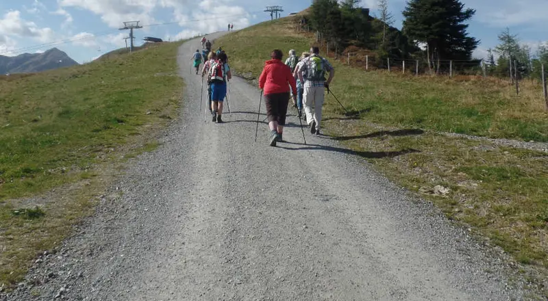
In vacanza con la famiglia
Per molte famiglie bambini e animali fanno semplicemente parte del viaggio. Ecco cosa organizzare prima e a cosa fare attenzione.
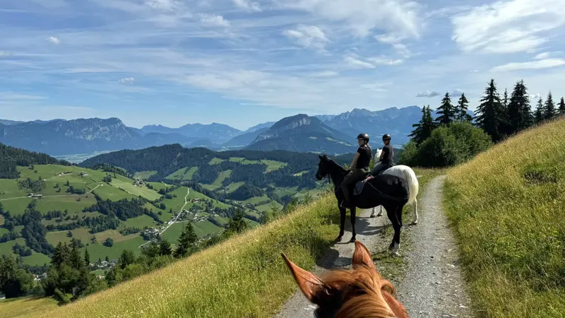
Vorresti portare il tuo cavallo all’Hotel Wastlhof? L’hotel ha un proprio maneggio e una scuola di equitazione da oltre cinquant’anni. Se sia disponibile un box per ospiti per il tuo cavallo, così come i possibili percorsi in montagna, è meglio chiederlo all’hotel con largo anticipo. Chiedi anche al tuo veterinario quali documenti e vaccinazioni servono per il viaggio.
Non hai un cavallo tuo ma vuoi cavalcare? L’Hotel Wastlhof di Niederau ha un maneggio da oltre cinquant’anni, con un maneggio coperto, un campo all’aperto con percorso di salto ostacoli e una quindicina di cavalli, tra cui haflinger: i cavalli tirolesi dorati con la criniera chiara. Puoi prendere lezioni sia che tu stia iniziando sia che tu abbia già esperienza. Ci sono anche giri sul pony per bambini dai 3 ai 6 anni e passeggiate a cavallo per cavalieri esperti, tra cui una fino a un’alpe a oltre 1.300 metri. In inverno puoi esplorare la valle anche in slitta trainata da cavalli.
Non ogni maneggio o maso dispone di box per ospiti. Nelle Alpi di Kitzbühel alcuni hotel per cavalli e masi li offrono; chiedi anche all’ufficio del turismo.

La Wildschönau
La valle alta della Wildschönau si trova nelle Alpi di Kitzbühel ed è nota come meta soleggiata e con neve sicura. Anche grazie al suo carattere accogliente, la valle ha vinto il primo premio dell’ADAC – il più grande automobile club tedesco – nella categoria «Klein & Fein» (piccolo e raffinato).
La Wildschönau è composta da quattro paesi con chiesa – Niederau, Oberau, Auffach e Thierbach – più la frazione di Mühltal. La valle è ideale per sciare in tutta tranquillità in un magnifico paesaggio montano. Sempre facile da raggiungere e non lontana da Kufstein, offre un ricco programma estivo oltre ai tradizionali sport invernali.
Il primo e più visitato paese, con la cabinovia per il Markbachjoch e la più ampia scelta di alloggi.
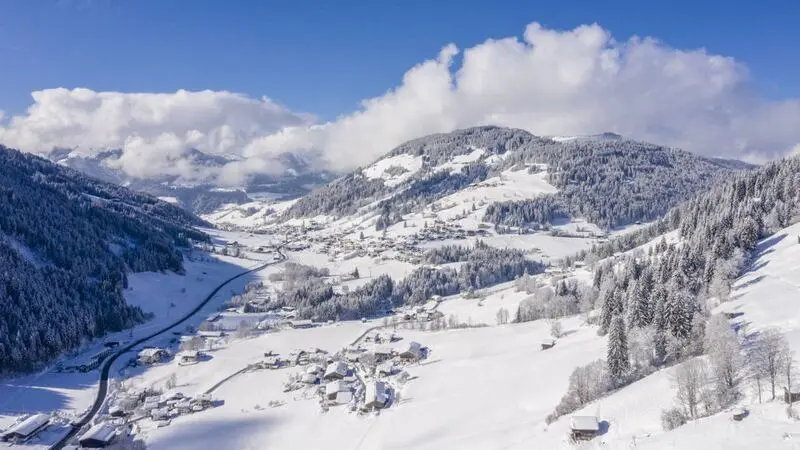
± 940 mIl cuore amministrativo della valle, con la grande chiesa parrocchiale e un ampio altopiano soleggiato.
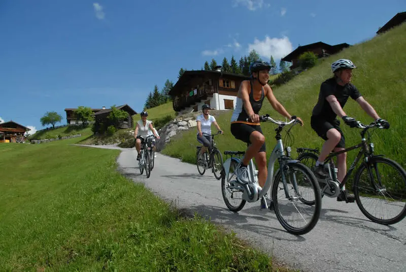
± 870 mIn fondo alla valle, ai piedi dello Schatzberg e del collegamento con la valle di Alpbach.
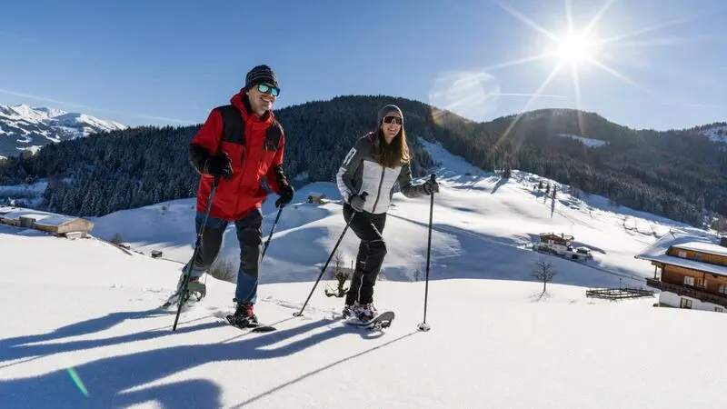
± 1.150 mIl paese più piccolo e più alto, tranquillo e con ampia vista sulla valle dell’Inn.
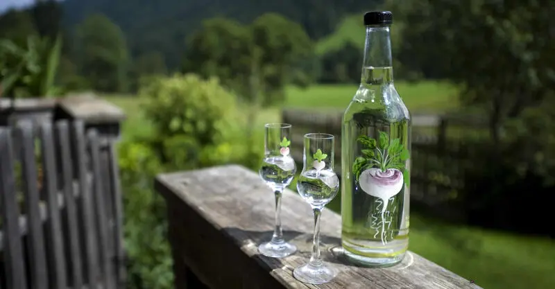
La Wildschönau è nota per il Krautinger, un forte distillato ottenuto dalle rape bianche. Secondo la tradizione, ai contadini della valle fu concesso il diritto di distillarlo già all’epoca dell’imperatrice Maria Teresa. Solo un numero limitato di masi può ancora produrlo – lo si assaggia direttamente al maso.
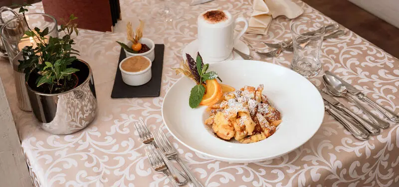
Storia
Niederau si trova nella Wildschönau, una valle alta del Tirolo (Austria). Per secoli è stata una valle isolata di contadini e minatori. I primi turisti arrivarono solo nel Novecento – e nel 1947 l’era degli sport invernali della valle ebbe inizio a Niederau con la prima seggiovia del Tirolo.
Quell’impianto fu un’impresa: l’ingegnere Sepp Hochmuth lo costruì subito dopo la seconda guerra mondiale, secondo la tradizione locale usando motori e ruote motrici di carri armati abbandonati alla stazione di Wörgl. Fu inaugurato il 14 gennaio 1947 e saliva da Niederau al Markbachjoch.
Tutto sul Markbachjoch: impianti, malghe e storia →
Foto storiche: archivi e fonti →

Lanerköpfl
Proprio sopra il paese si erge il Lanerköpfl – scritto anche Lahnerköpfl dall’hotel e da molti abitanti. Insieme al Markbachjoch forma il comprensorio sciistico di Niederau, con piste che terminano in paese.
L’impianto. Per molti anni una seggiovia monoposto portava gli sciatori in quota. Dalla stagione 2008/09 è in funzione la Lanerköpflbahn: una veloce seggiovia a quattro posti con cupola, dalla stazione a valle a 843 m alla stazione a monte a 1.560 m – in circa sette minuti, con una capacità di 1.400 persone all’ora.
La discesa. I versanti nord del Lanerköpfl e del Markbachjoch sono noti per essere impegnativi; in particolare la pista Hochberg mette alla prova anche gli sciatori esperti. Se preferisci andare con calma, esercitati più in basso sui campi scuola ai margini del paese. Informati in loco sullo stato attuale dello skilift di pratica.
La pista da slittino. Il Lanerköpfl è anche la montagna da slittino di Niederau: dalla stazione a monte una pista naturale di quasi 6 km passa accanto alla Gseng-Alm e alla Laner-Alm e torna alla stazione a valle. Con 736 m di dislivello e una pendenza media del 14% è un percorso sportivo.
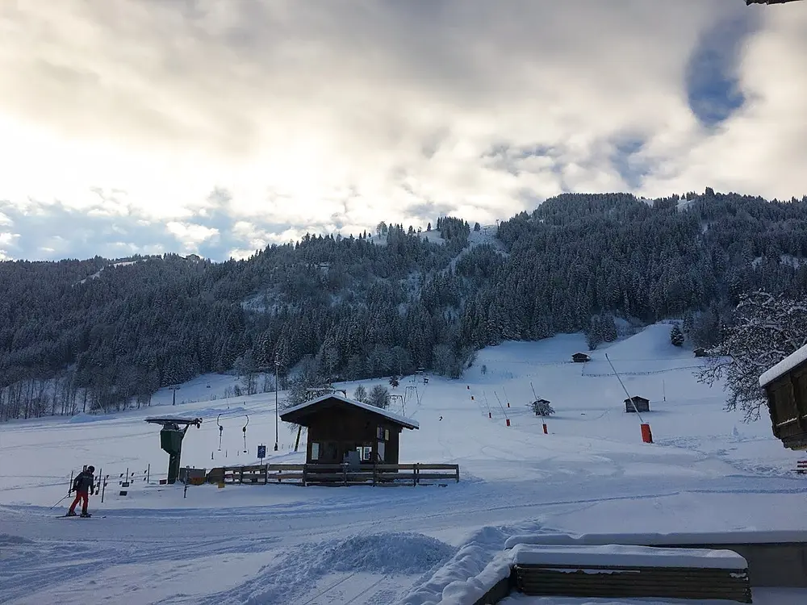
Soggiorno consigliato
Un hotel a quattro stelle a conduzione familiare con centro benessere, sulla strada principale di Niederau. Piste, percorsi di fondo e sentieri iniziano praticamente accanto.
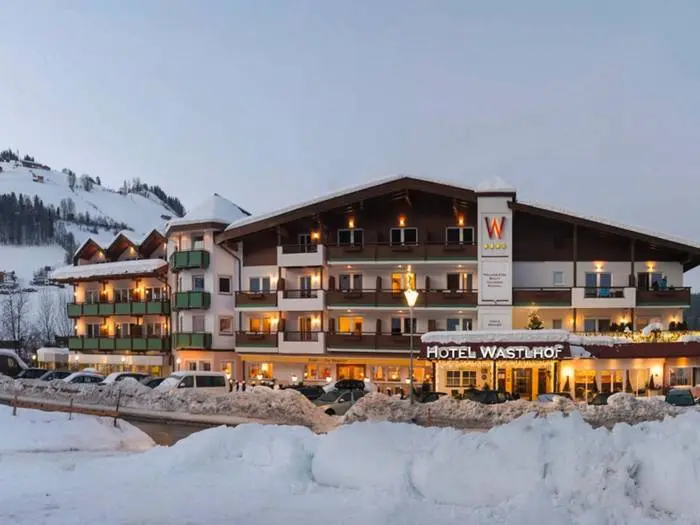
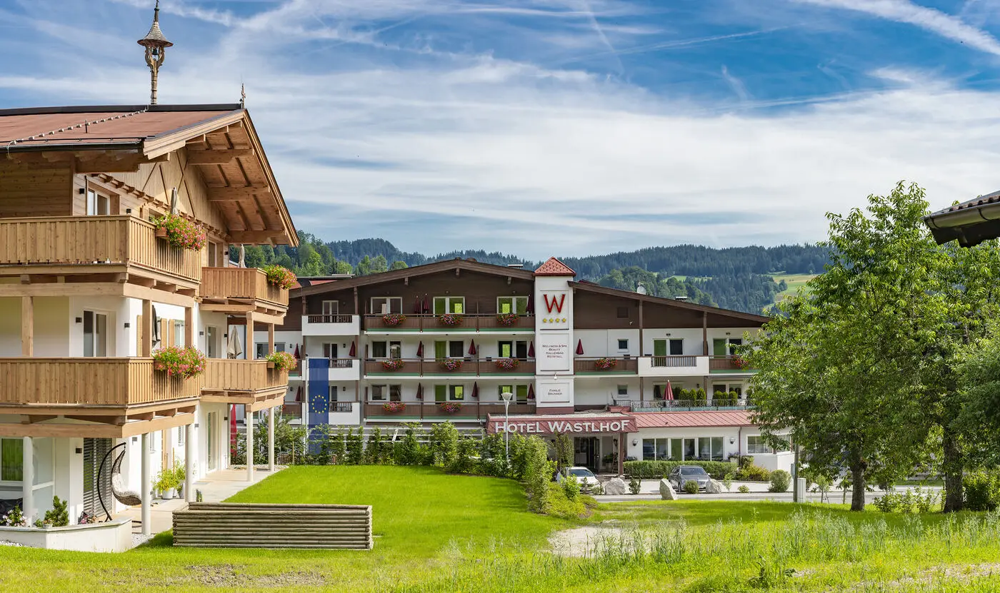
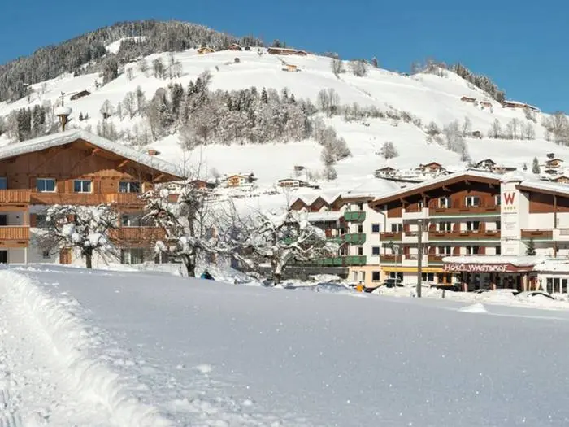
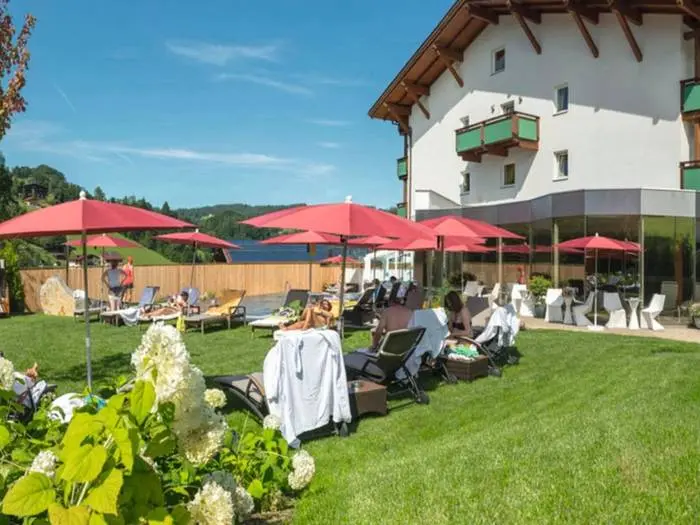
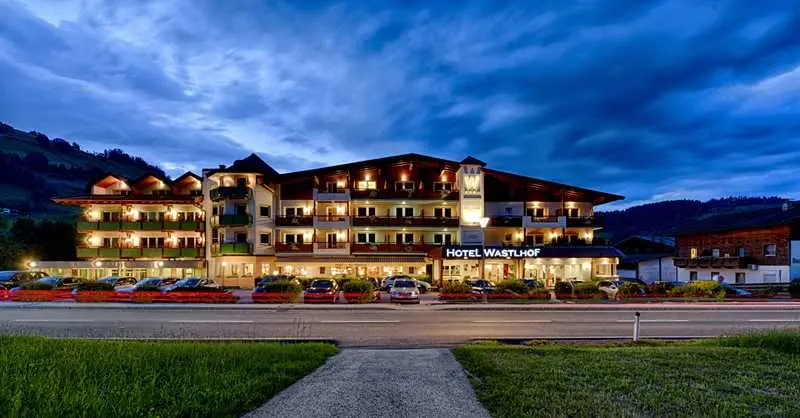
Partner: Niederau.nl collabora con l’Hotel Wastlhof, che ha fornito le foto. Si tratta di una raccomandazione personale; non è stato pagato né ricevuto alcun compenso. Per prezzi, servizi e disponibilità consulta il sito dell’hotel.
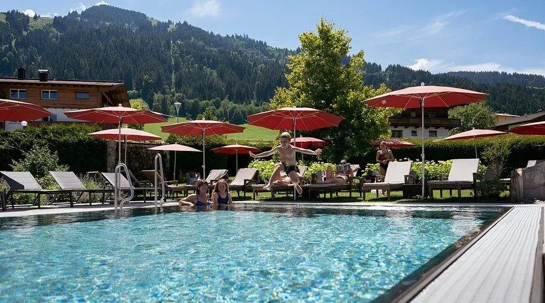
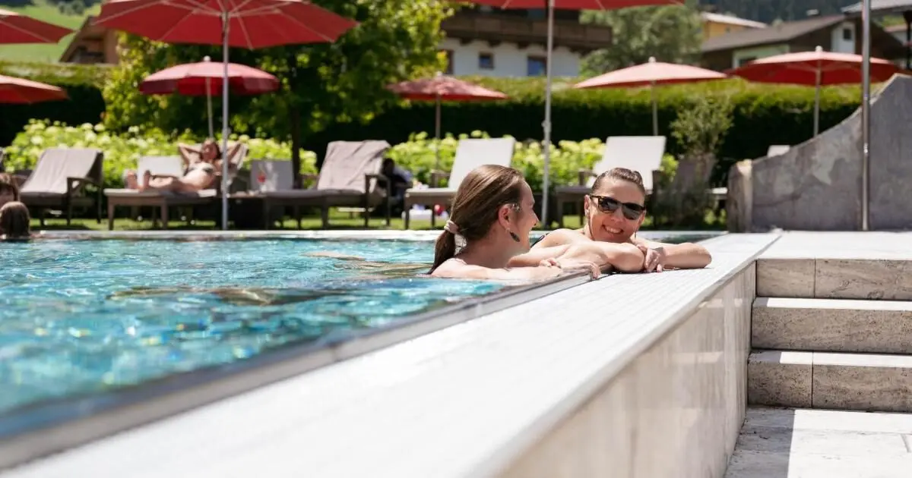
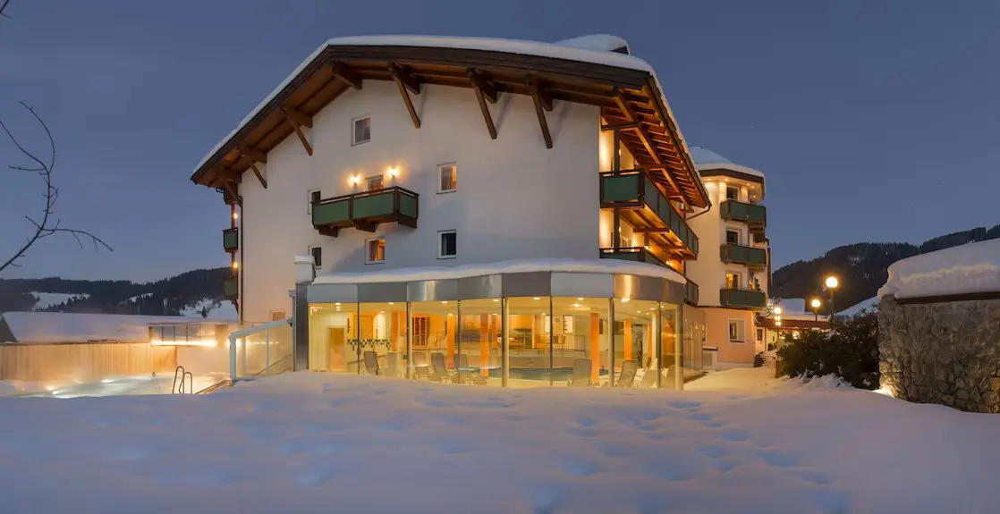
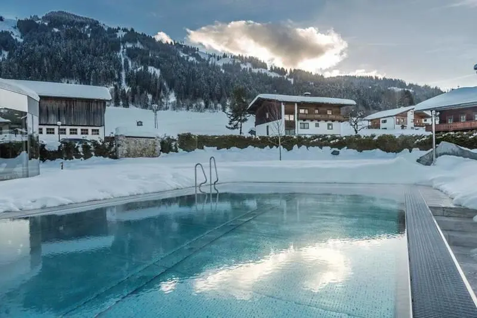
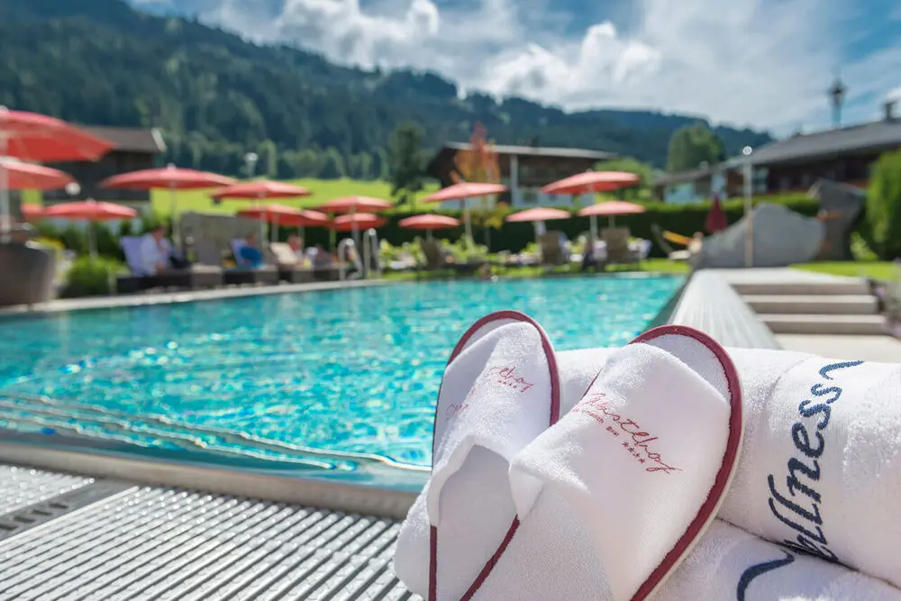
Cerchi un’altra sistemazione, come una pensione, un appartamento per le vacanze o un agriturismo? Oppure vuoi sapere cosa c’è in programma questa settimana? L’ufficio del turismo della valle, Wildschönau Tourismus, può aiutarti. Elenca gli alloggi di tutti e quattro i paesi, il programma degli eventi e informazioni aggiornate su impianti, sentieri e itinerari escursionistici.
Wildschönau TourismusL’ufficio si trova a Oberau, a pochi minuti di auto da Niederau. Per gli orari di apertura consulta il sito.
Come arrivare
Nota: le autostrade austriache richiedono una vignetta (digitale o adesiva). Dai Paesi Bassi centrali calcola circa 9–10 ore di guida.
La stazione di Wörgl Hbf si trova sulla linea principale Monaco di Baviera – Innsbruck ed è ben collegata, anche con treni notturni. Da Wörgl un autobus regionale sale nella Wildschönau.
Aeroporti più vicini: Innsbruck (± 1 ora), Salisburgo (± 1,5 ore) e Monaco di Baviera (± 2 ore).
Pratico
Per sciare, da metà gennaio a metà marzo è il periodo con più garanzia di neve; marzo è particolarmente soleggiato. In estate giugno e settembre sono più tranquilli delle vacanze scolastiche, con un tempo ottimo per le escursioni.
Sì, per le autostrade austriache (come l’A12 fino a Wörgl). Puoi acquistarla online da ASFINAG o alle stazioni di servizio poco prima del confine. Se acquisti online una vignetta digitale, fallo con qualche giorno di anticipo.
Assolutamente sì. Le piste ampie intorno al Markbachjoch, i campi scuola vicino al paese e le scuole di sci rendono da tempo Niederau molto amata da famiglie e principianti.
La lingua locale è il tedesco (con un forte dialetto tirolese), ma in hotel, scuole di sci e ristoranti te la cavi benissimo in inglese e spesso anche in olandese.
Numero di emergenza generale 112. Soccorso alpino in Austria: 140. In inverno controlla sempre il bollettino valanghe prima di un’escursione.
Presso l’ente del turismo ufficiale della Wildschönau e presso lo Ski Juwel. Vedi i link a fianco.
Spesso sì, ma cambia da una struttura all’altra. Chiedi in anticipo se i cani sono ammessi e quanto costa. Porta il passaporto europeo per animali da compagnia e tieni il cane al guinzaglio negli alpeggi. Altri consigli si trovano sotto «Con il tuo cane».
In valle nella piscina all’aperto riscaldata tra Niederau e Oberau e nelle strutture con piscina propria. Per un lago naturale, percorri in auto 30–45 minuti fino al Reintalersee, al Thiersee o all’Hintersteiner See.
Solo dove sono disponibili box per ospiti. Chiedi alla tua struttura o all’ufficio del turismo con largo anticipo.
Con pazienza: al mattino presto o al crepuscolo su pascoli di montagna e margini del bosco, con il binocolo e da lontano. Per un incontro garantito visita il Wildpark Aurach vicino a Kitzbühel.
Niederau.nl è un sito indipendente e non è affiliato all’ente del turismo né alla società degli impianti. Verifica sempre orari e prezzi aggiornati presso le fonti ufficiali.
Galleria fotografica
Una selezione dalla valle nel corso delle stagioni. Tutte le foto sono riunite in un’unica pagina, ordinate per stagione.
Molte di queste foto ci sono state gentilmente messe a disposizione dal nostro partner Hotel Wastlhof di Niederau. Grazie per l’uso delle immagini e per la piacevole collaborazione.